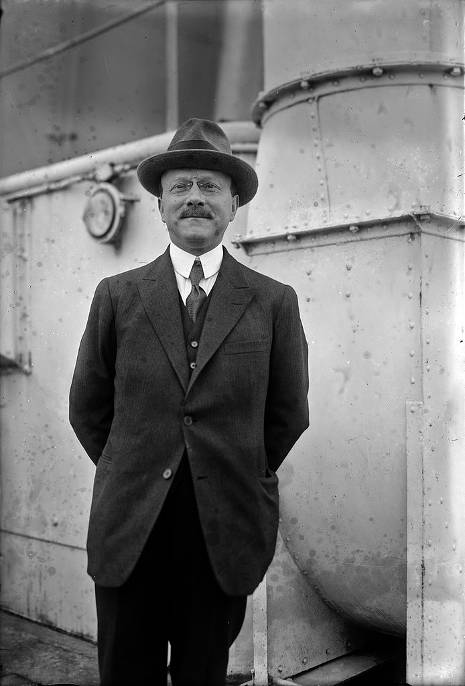

Citroën
Андре Гюстав Ситроен (фр. André Citroën; 5 февраля 1878 — 3 июля 1935) — французский промышленник, создатель концерна «Citroën» и автомобиля под тем же наименованием.
Андре Густав Ситроен родился в Париже. Он был пятым ребёнком в еврейской семье: отец — Леви Ситрун (нидерл. Levie Citroen), нидерландский торговец алмазами и другими драгоценными камнями, мать — Маша Клейнман из Польши. Андре Ситроену не успело исполниться и шести лет, его отец кончает жизнь самоубийством и оставляет семье огромное состояние. Только один пай Леви Ситруна в заокеанском предприятии составлял 1 млн франков — огромные деньги по тем временам. Но, несмотря на расширенные связи в финансовых кругах торговцев алмазами, Андре Гюстав Ситроен предпочитает не следовать по стопам отца. Андре планирует поступать в политехническую школу, чтобы затем стать инженером. Завершив обучение, Ситроен отправляется на военную службу. В годы Первой мировой войны Андре построил завод по производству шрапнельных снарядов в Париже на набережной Жавель вблизи Эйфелевой башни. По свидетельству А. А. Игнатьева, русского военного агента во Франции, завод был построен на средства от заказа на выпуск шрапнельных снарядов для России. В марте 1915 года Ситроен получил аванс в размере двадцати процентов с общей суммы в обеспечение которого кроме банковских гарантий первоклассного банка им была выдана закладная на все заводское оборудование и на земельный участок с действовавшим на нём на тот момент заводом шарикоподшипников. Строительство завода было завершено в рекордные сроки — всего за четыре месяца. Заказ на выпуск шрапнели для русской армии в период с 1 августа 1915 года по 1 августа 1916 года был выполнен «с минимальным опозданием и без единого процента брака». В 1919 году он переоборудует завод для производства автомобилей. Компания «Ситроен» становится одним из наиболее успешных автопроизводителей в Европе к началу 1930-х годов. Однако страсть Андре к азартным играм приводит её к банкротству. Michelin покупает Ситроен. Умер в Париже от рака желудка в 1935 году. Похоронен на Монпарнасе, похоронами руководил главный раввин Парижа.
